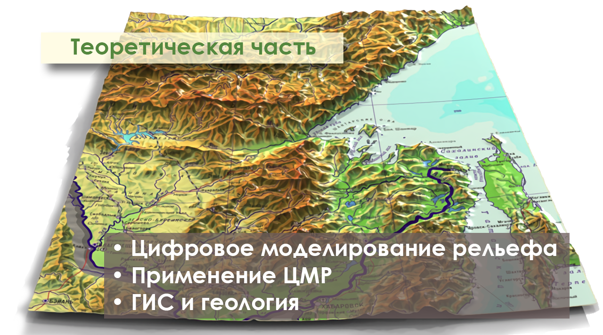

Теория

Раздел Теория включает в себя разделы, необходимые для полного понимания студентом проходимой дисциплины.
Включает в себя разделы о том, что такое цифровое моделирование рельефа, применение на практике, а так же информация о геоинформационных системах и геологии.